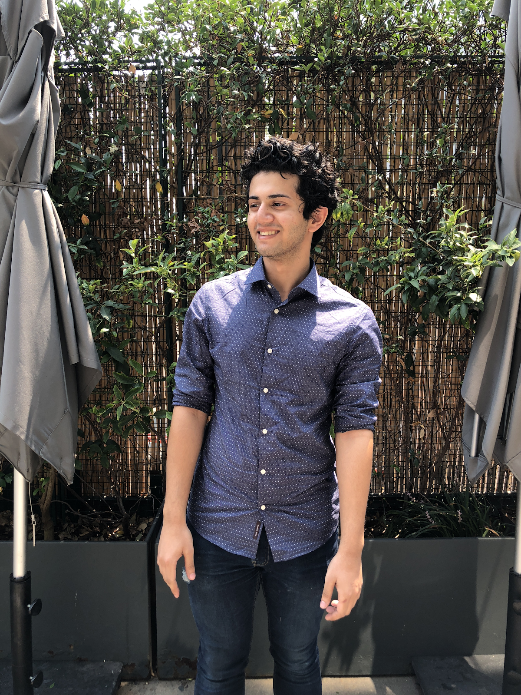

Dhruv Patel
Dhruv Patel is a junior at Barrett, The Honors College at Arizona State University, double majoring in Computer Science and Applied Mathematics. His main inspiration behind the development of Treble is his love for music and his passion for web development. Some other hobbies/interest include watching netflix and playing chess.
Merin Jacob

Samdeet Khan
Samdeet Khan is a junior at Arizona State University, studying computer science and statistics. His main career ambition is to be able to interpret and gain insight from large quantities of data, an increasingly relevant skill in the engineering world. His passions include hip hop music and producing beats, both serving as big inspirations behind the development of Treble.
Diana Estrada
I’m a junior Arizona State University majoring in Digital Culture with a concentration in Media Processing. Some of my interests/hobbies include gaming, electronics, (DIY) circuitry, and listening to music. What I wish to one day achieve is to create some type of interactive sound set, where a person can walk around and create different types of sounds from the different types of sensors.
Rahul Patel
I'm Junior at Arizona State University majoring Informatics. My ambition is to become Data scientist and extract knowledge from larg data. My hobbies inludes playing games, cooking and going through open source data which helps me to develop databse behind Treble.